Project Description
Train Info is not just a website that informs users about their route, construction, and delays. Moreover, the goal is to entertain them while they are sitting on the train. The project is being implemented in one of the well-developed countries in Europe, and it is specifically dedicated to commuters.
ProblemPortal looks like the advertisement page, huge bounce rate, weak user experience and accessibility
SolutionAdding the new functionalities based on the market needs, changing IA, following design system, getting rid of the irrelevant content, WCAG audit
Research and goals understanding
We have measured the user traffic. Over the course of 3 months, the website has been visited almost 1.5 million times. Unfortunately, almost 80% of the users lose interest and leave the start page without any further interaction. Only 2,4% of users have found the train finder option, and only a few of them have read the articles.
Usability audit and interviews
- Some elements have insufficient contrast, according to the WCAG
- Wording issue - texts should be formulated more concisely for quicker user comprehension
- The status of interactive elements should be visually differentiated
- More whitespaceb can be used to avoid overwhelming the user
- Performance issue: the website is not responding at times
- More user control - carousel moves too quickly to read the content, and there is no option to pause a podcast.
While interviewing people on the train, we discovered that:
- Train Info is perceived as cluttered and promotional, resembling more of an advertisement websitie
- Users had difficulty finding interesting content
- Travellers do not see any real added value in Train Info
- Delays, cancelled trains and missed stops are displayed inaccurately. This leads to confusion and misunderstandings among travellers.

Garthering ideas for MVP
After analysing the current state of the app, we gathered all the ideas on what and how we wanted to improve. The main points to cover were to change the design to be cleaner, make the information more understandable, and add new functionalities and content. Due to the size of the project, we and the leaders had to divide the introduction of improvements into several smaller parts.
First design iteration
Our goal was to gather all the insights together and quickly implement a solution that meets users' expectations.
We attempted to create a well-organized page layout that effectively showcased the content and features we provided. We wanted to highlight the possibilities of searching for a trip and checking out the departure board at the station.
While on the train, users can view information about the current connection. To motivate users to consume more content, we decided to display articles that refer to the user's destination region. The idea behind it was to provide content within a specific user context.
Analytics and interviews
After the initial implementation of the new redesign, we checked the results. By using an internal analytic tool, we have generated valuable insights.
Changing the IA
Following received feedback, we have decided to make a change to the information architecture. Based on the tests and the fact that most users open the page on mobile devices, we have decided to introduce a more mobile app-like look.
We have implemented four tabs on the bottom navigation: Trip, Regional, Infotainment and Menu. The purpose of it is to provide a better overview of the functionalities and allow for quick navigation.
The connection search functionality is the most commonly used feature, which is why it is positioned first on the tab bar. To enhance user customisation, we have added a favourite stations feature.
Additionally, we have introduced a new "For You" tab on the infotainment page, which provides personalised content to encourage increased content consumption. Previously, this functionality was hidden in the settings, and 90% of the users never used it. We changed the flow to hook and asked users to sign up later.
To break the monotony of articles, we have designed new cards to create a rhythm while reading.
A new focus: regional content
The most surprising thing was that the Regional category in the trip details was the most successful feature. All the test people mention it and claim that it would bring value to them.
That is the reason why, in a new Train Info release, we have implemented a separate tab for Regional content, which includes articles about points of interest, events, and trips.
An additional value is the possibility of searching for connections to certain spots.
For the MVP, data is provided by an external partner. Depending on the success of the feature, we plan to expand the range of content on this page and incorporate additional functionalities, such as ratings and ticket booking.
Summary
Train Info is still an ongoing project with the potential for further improvements. Usability tests have clearly shown us that we can also focus on other areas to enhance the user experience, build a more valuable product, and, by doing so, provide financial revenue for the client.
The areas we want to explore in the next steps are:
